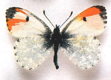
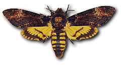

 A nappali lepkék felismerhetők arról, hogy napközben aktívak, általában élénk színűek, csápjuk bunkós, és nyugalomban a szárnyukat hátuk fölött összecsukva tartják.
A nappali lepkék hátsó szárnyának töve kiszélesedő, megerősített, és repülés közben alátámasztja az elülső szárnyat.
 Az éjjeli lepkék olyan változatosak, hogy nehéz általános leírást adni róluk. Sok közülük nappal is repül. Csápjuk általában fonalas vagy fésűs és hiányzik róla a bunkó. Többségüknek elülső és hátulsó szárnyát egy kapcsoló készülék fogja össze. Ennek felépítése többnyire olyan, hogy a hátsó szárny tövén elhelyezkedő egy vagy több akasztótüske az elülső szárnyon levő akasztóba kapaszkodik bele. A hímeknek egyetlen erőteljes, a nőstényeknek pedig számos, vékony akasztótüskéje van.